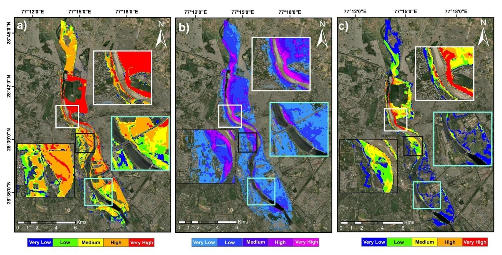
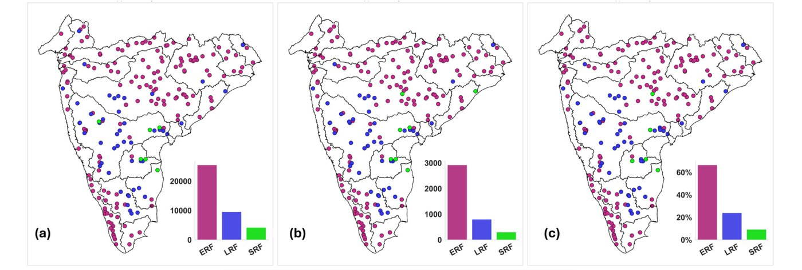
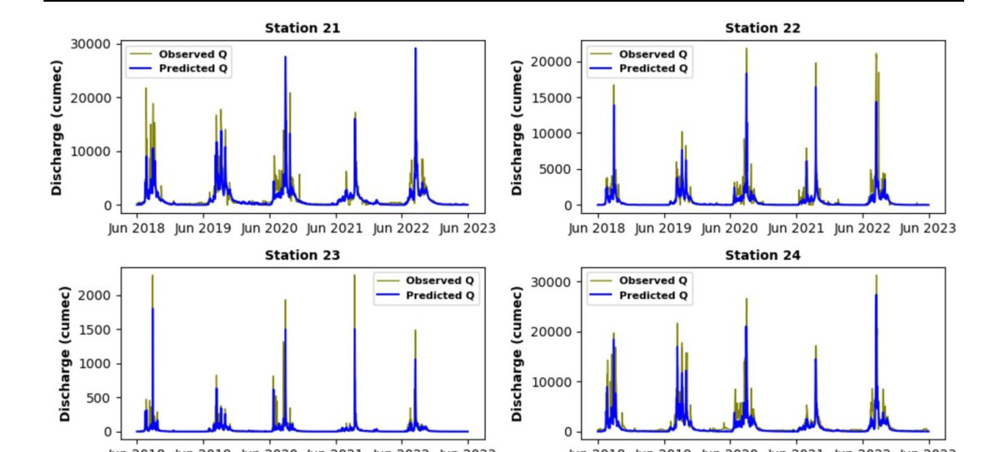
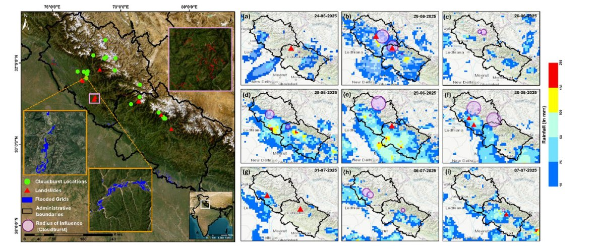
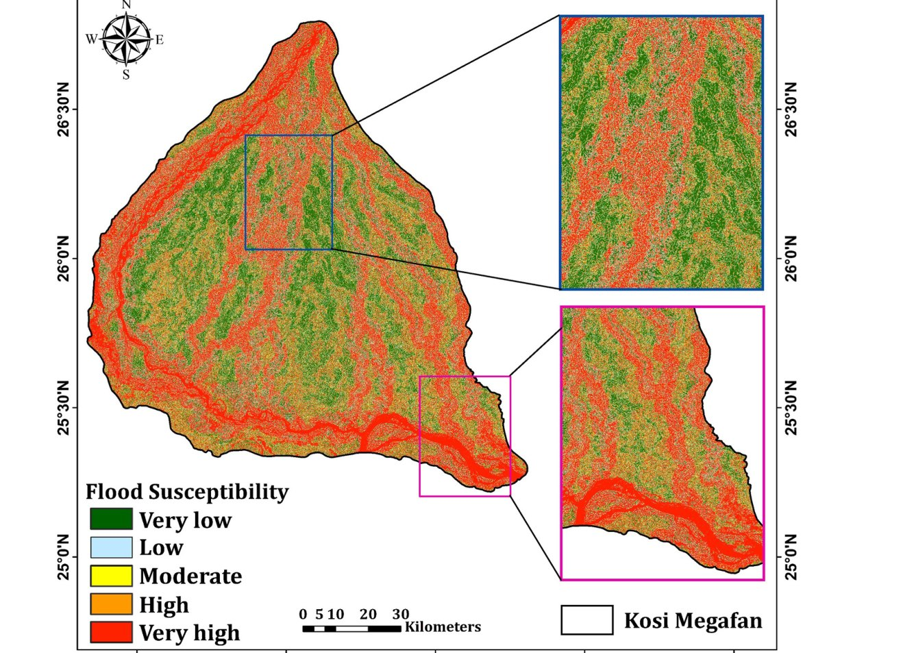
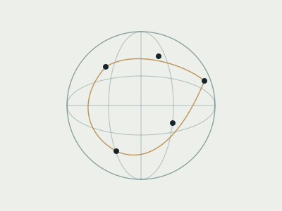

S2S2D — 3rd International Conference on Subseasonal to Seasonal to Decadal Prediction
“Transfer-learned Transformers for Subseasonal Streamflow Forecasting in Monsoon-Dominated, Data-Sparse Catchments”
Water Resources Development & Management, IIT Roorkee
PhD researcher working at the intersection of hydrology, hydroclimatology, and artificial intelligence — with a focus on floods, streamflow forecasting, and explainable AI across Indian river basins.
“Transfer-learned Transformers for Subseasonal Streamflow Forecasting in Monsoon-Dominated, Data-Sparse Catchments”
“Regime-Dependent Evaluation of the Geomorphic Flood Index Using ERA5-Driven Hydrodynamic Simulations and Satellite Inundation over a Large Monsoon Basin”
Identification of flood occurrences spanning four decades across more than 206 river catchments, building a systematic flood-event record for a data-scarce region. under review
Temporal Fusion Transformers combined with process-informed clustering to estimate daily baseflow across India at a national scale.
Interpretable deep learning reveals how climate and catchment drivers interact to shape flood behaviour nationwide.
Figures below come from my published papers. Click a card for the full story.

Coupled hydrodynamic modelling of flood depth, velocity and momentum for urban flood hazard.
Figure from Journal of Hydrology (2026)
What generates floods across 206 Peninsular Indian catchments, and which drivers matter most.
Figure from Earth's Future (2026)
An enhanced LSTM that learns across many gauges to forecast daily streamflow in large basins.
Figure from Water Resources Management (2026)
Satellite observations of rainfall, landslides and flooding in a Himalayan multi-hazard cascade.
Figure from Natural Hazards (2025)
Stacked machine-learning ensembles with SHAP to map flood susceptibility and explain it.
Figure from Environmental & Sustainability Indicators (2025)
Conferences and collaborations spanning eight countries across four continents.
Five international visits so far, supported by travel grants from WMO, WCRP, GRSS, ANRF and IIT Roorkee. Hover or tap a pin.
Floods and droughts are usually studied one at a time. The next step is to follow one hazard into the next: how a fire-scarred catchment changes its response to the first monsoon rains, and how that cascades into floods, sediment and debris, and later low-flow stress.
The plan builds on explainable deep learning and process-informed clustering already developed for Indian catchments, adding burn severity and recovery stage as new drivers, and aiming at uncertainty-aware early warning for the Himalaya and central Indian forests.
A PyTorch Lightning implementation that forecasts streamflow 1, 3, 7, 14 and 30 days ahead for 206 Indian river basins, comparing cluster-specific models against a single global model.